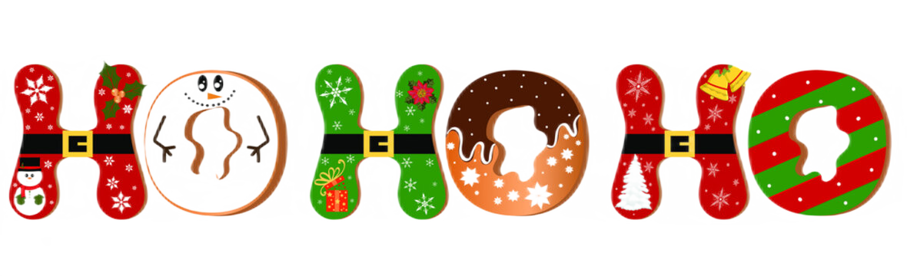

A Historia do Natal
A história do Natal tem suas raízes na tradição cristã e está associada ao nascimento de Jesus Cristo. De acordo com a Bíblia Cristã, Jesus nasceu em Belém, na Judeia, cerca de 2 mil anos atrás. O Natal, como é celebrado hoje, é uma mistura de tradições cristãs e elementos de festividades pagãs que foram incorporados ao longo dos séculos. Por exemplo, a data de 25 de dezembro foi escolhida como o dia do Natal. A data foi escolhida para coincidir com festivais pagãos de solstício de inverno que já eram celebrados nessa época do ano. Ao longo dos séculos, o Natal evoluiu para uma celebração culturalmente significativa em muitos países ao redor do mundo, mesmo para pessoas que não são necessariamente religiosas. É uma época de dar presentes, estar com a família, trocar cartões, decorar árvores de Natal e participar de outras tradições festivas.
Por que trocamos presenter?
No Brasil, a troca de presentes é uma tradição consolidada do período natalino. O comércio é aquecido nesse período justamente porque as pessoas compram presentes para seus amigos e familiares. Não existe um momento certo pra dar o presente na cultura brasileira, que pode ser entregue tanto no dia 25 como um pouco antes. Muitas famílias, amigos e colegas de trabalho optam por uma brincadeira chamada amigo-secreto, cujo intuito é dar um presente para uma pessoa específica. Um sorteio define quem vai presentear quem, e essa brincadeira é realizada para que haja essa distribuição de presentes de uma maneira coletiva e descontraída. O Natal também é um período em que as ações de caridade aumentam bastante, uma vez que muitas pessoas se engajam em dar presentes para crianças carentes. Uma prática comum é a adoção da cartinha. Uma pessoa escolhe uma carta em que uma criança escreve o presente que quer ganhar. O presente é entregue aos Correios, que se encarrega de transportá-lo até a criança indicada.
As melhores receitar para se fazer no natal: